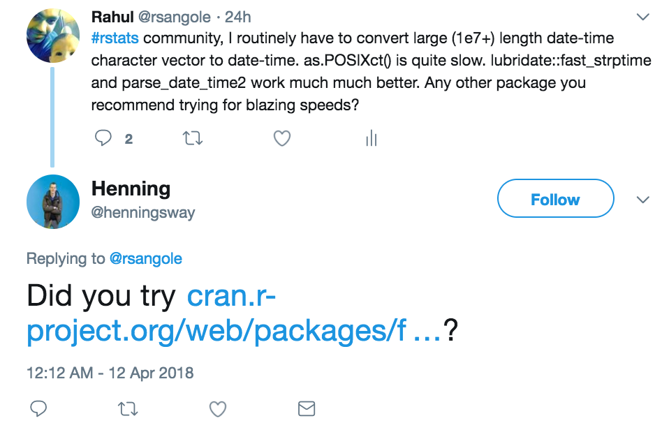
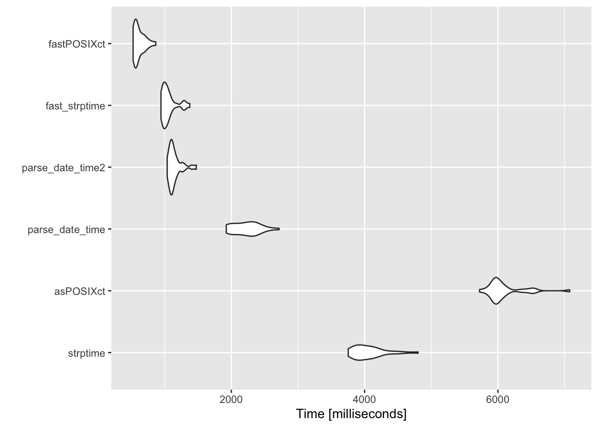

tvec <- rep(as.character(Sys.time()+runif(1,-1e9,1e9)),1e7)
strp_fn <- function(tvec) strptime(tvec, format = '%Y-%m-%d %H:%M:%S', tz = 'UTC')
POSIX_fn <- function(tvec) as.POSIXct(tvec, format = '%Y-%m-%d %H:%M:%S', tz = 'UTC')
pdt_fn <- function(tvec) lubridate::parse_date_time(tvec, orders = 'Ymd H M S', tz = 'UTC')
pdt2_fn <- function(tvec) lubridate::parse_date_time2(tvec, orders = 'Ymd H M S', tz = 'UTC')
faststrp_fn <- function(tvec) lubridate::fast_strptime(tvec, format = '%Y-%m-%d %H:%M:%OS', tz = 'UTC')
fasttime_fn <- function(tvec) fasttime::fastPOSIXct(x = tvec, tz = 'UTC', required.components = 6)
benchmarks <- microbenchmark::microbenchmark(
strptime = strp_fn(tvec), asPOSIXct = POSIX_fn(tvec),
parse_date_time = pdt_fn(tvec), parse_date_time2 = pdt2_fn(tvec),
fast_strptime = faststrp_fn(tvec), fastPOSIXct = fasttime_fn(tvec),
times = 30L, unit = 's')
ggplot2::autoplot(benchmarks, log = F)
print(benchmarks) ; print(benchmarks, unit = 'relative')Performance Benchmarking for Date-Time conversions
Benchmarking
Programming Practices
I have 6 methods compete against each other to figure out the fastest way to convert characters to date-time for large datasets.
Motivation
Once more, there’s was an opportunity at work to optimize code and reduce run-time. The last time was for dummy-variable creation. Upon querying large data from our hive tables, the returned dataframe contains values of class character. Thus, everything has to be first type converted before any processing can be done.
The most time consuming of these has been character to date-time conversion for which I traditionally used base::as.POSIXct.
Upon searching for some options myself, some help from Twitter, I’ve compared the performance of 6 functions on a 1e7 size character vector.

Performance comparison
I’ve run these benchmarks on my Macbook Pro:
- Processor Name: Intel Core i5
- Processor Speed: 2.4 GHz
- Number of Processors: 1
- Total Number of Cores: 2
- L2 Cache (per Core): 256 KB
- L3 Cache: 3 MB
- Memory: 8 GB
Packages compared
base::strptimebase::as.POSIXctlubridate::parse_date_timelubridate::parse_date_time2[fast C parser]lubridate::fast_strptime[fast C parser]fasttime::fastPOSIXct[fast C parser]
Results

The results are quite amazing. fastPOSIXct wins by a massive margin. as.POSIXct is 10x slower than fastPOSIXct and has a wider spread too.
Unit: relative
expr min lq mean median uq max
strptime 7.140213 6.995050 6.587170 6.931937 6.243467 5.545282
asPOSIXct 10.888603 10.668598 9.886067 10.338859 9.127702 8.170841
parse_date_time 3.658794 3.700901 3.607782 3.840411 3.530341 3.136295
parse_date_time2 1.973176 1.957485 1.864200 1.924281 1.753341 1.701600
fast_strptime 1.795452 1.753926 1.717556 1.772935 1.605809 1.588742
fastPOSIXct 1.000000 1.000000 1.000000 1.000000 1.000000 1.000000
neval
30
30
30
30
30
30If you run these bench marks on more powerful machines or larger datasets, share your results too. It’ll be interesting to see if this result scales.
Thanks Henning for the winning package suggestion! I owe you some beer!